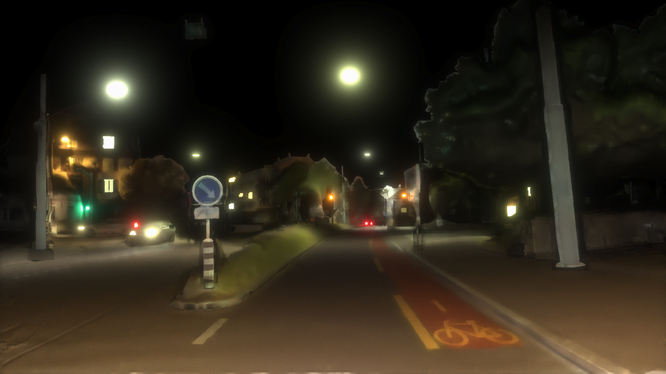

Our method accepts as input a single daytime image. Inverse rendering is used to infer scene parameters (materials, geometry and lights) and forward rendering is applied to arrive at a photorealistic nighttime image.
Overview
We present SOLO (Sun Off, Lights On), a monocular day-to-night translation method that can be used to translate a daytime semantic segmentation dataset into a nighttime one by converting each daytime image to its nighttime counterpart while preserving the original semantic segmentation annotations. To the best of our knowledge, SOLO is the first monocular physically based approach in 3D for simulating nighttime.

